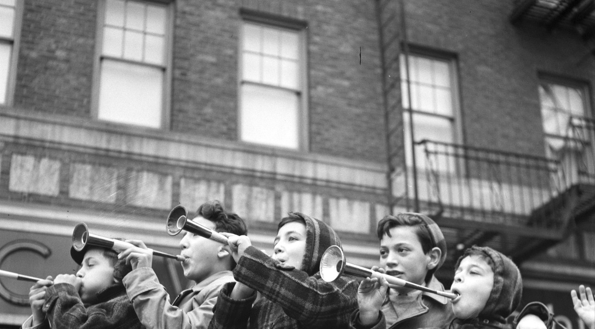

The captain's book · Friday
Page 84
Benedetto's
Bleecker Street · Dinner from fiveCharlie Moran, captain

Bleecker Street, New Year's Eve. This block has always blown its own horn.
RESERVED
Moran, party of 2.
Charlie's, opening soon
Charlie's, opening soon
Tonight's Book
Seated by the captain
TIME
PARTY
NO.
TBL.
CAPTAIN'S NOTE
7:00
Mr. Grant
6
1
His table. Nobody else sits there.
7:30
Barney
2
9
Back booth, facing the door.
8:00
Diane
2
4
Charlie's guest. Best candle.
8:15
Det. Ritter
1
Bar
Not eating. Just collecting.
8:45
Paulie
1
Back
Staff. Stop seating him.
10:30
Bed-Stuy party
3
12
Paulie's friends. Cash up front.
Parties of six or more, see the captain. The menu is inside.